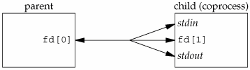
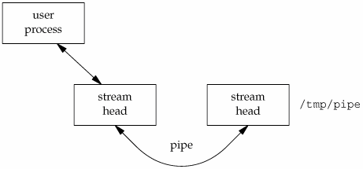

17.2. STREAMS-Based PipesA STREAMS-based pipe ("STREAMS pipe," for short) is a bidirectional (full-duplex) pipe. To obtain bidirectional data flow between a parent and a child, only a single STREAMS pipe is required.
Figure 17.1 shows the two ways to view a STREAMS pipe. The only difference between this picture and Figure 15.2 is that the arrows have heads on both ends; since the STREAMS pipe is full duplex, data can flow in both directions. Figure 17.1. Two ways to view a STREAMS pipe
If we look inside a STREAMS pipe (Figure 17.2), we see that it is simply two stream heads, with each write queue (WQ) pointing at the other's read queue (RQ). Data written to one end of the pipe is placed in messages on the other's read queue. Figure 17.2. Inside a STREAMS pipe
Since a STREAMS pipe is a stream, we can push a STREAMS module onto either end of the pipe to process data written to the pipe (Figure 17.3). But if we push a module on one end, we can't pop it off the other end. If we want to remove it, we need to remove it from the same end on which it was pushed. Figure 17.3. Inside a STREAMS pipe with a module
Assuming that we don't do anything fancy, such as pushing modules, a STREAMS pipe behaves just like a non-STREAMS pipe, except that it supports most of the STREAMS ioctl commands described in streamio(7). In Section 17.2.2, we'll see an example of pushing a module on a STREAMS pipe to provide unique connections when we give the pipe a name in the file system. ExampleLet's redo the coprocess example, Figure 15.18, with a single STREAMS pipe. Figure 17.4 shows the new main function. The add2 coprocess is the same (Figure 15.17). We call a new function, s_pipe, to create a single STREAMS pipe. (We show versions of this function for both STREAMS pipes and UNIX domain sockets shortly.) The parent uses only fd[0], and the child uses only fd[1]. Since each end of the STREAMS pipe is full duplex, the parent reads and writes fd[0], and the child duplicates fd[1] to both standard input and standard output. Figure 17.5 shows the resulting descriptors. Note that this example also works with full-duplex pipes that are not based on STREAMS, because it doesn't make use of any STREAMS features other than the full-duplex nature of STREAMS-based pipes.
Figure 17.4. Program to drive the add2 filter, using a STREAMS pipe
#include "apue.h"
static void sig_pipe(int); /* our signal handler */
int
main(void)
{
int n;
int fd[2];
pid_t pid;
char line[MAXLINE];
if (signal(SIGPIPE, sig_pipe) == SIG_ERR)
err_sys("signal error");
if (s_pipe(fd) < 0) /* need only a single stream pipe */
err_sys("pipe error");
if ((pid = fork()) < 0) {
err_sys("fork error");
} else if (pid > 0) { /* parent */
close(fd[1]);
while (fgets(line, MAXLINE, stdin) != NULL) {
n = strlen(line);
if (write(fd[0], line, n) != n)
err_sys("write error to pipe");
if ((n = read(fd[0], line, MAXLINE)) < 0)
err_sys("read error from pipe");
if (n == 0) {
err_msg("child closed pipe");
break;
}
line[n] = 0; /* null terminate */
if (fputs(line, stdout) == EOF)
err_sys("fputs error");
}
if (ferror(stdin))
err_sys("fgets error on stdin");
exit(0);
} else { /* child */
close(fd[0]);
if (fd[1] != STDIN_FILENO &&
dup2(fd[1], STDIN_FILENO) != STDIN_FILENO)
err_sys("dup2 error to stdin");
if (fd[1] != STDOUT_FILENO &&
dup2(fd[1], STDOUT_FILENO) != STDOUT_FILENO)
err_sys("dup2 error to stdout");
if (execl("./add2", "add2", (char *)0) < 0)
err_sys("execl error");
}
exit(0);
}
static void
sig_pipe(int signo)
{
printf("SIGPIPE caught\n");
exit(1);
}
Figure 17.5. Arrangement of descriptors for coprocess We define the function s_pipe to be similar to the standard pipe function. Both functions take the same argument, but the descriptors returned by s_pipe are open for reading and writing. ExampleSTREAMS-Based s_pipe FunctionFigure 17.6 shows the STREAMS-based version of the s_pipe function. This version simply calls the standard pipe function, which creates a full-duplex pipe. Figure 17.6. STREAMS version of the s_pipe function
#include "apue.h"
/*
* Returns a STREAMS-based pipe, with the two file descriptors
* returned in fd[0] and fd[1].
*/
int
s_pipe(int fd[2])
{
return(pipe(fd));
}
17.2.1. Naming STREAMS PipesNormally, pipes can be used only between related processes: child processes inheriting pipes from their parent processes. In Section 15.5, we saw that unrelated processes can communicate using FIFOs, but this provides only a one-way communication path. The STREAMS mechanism provides a way for processes to give a pipe a name in the file system. This bypasses the problem of dealing with unidirectional FIFOs. We can use the fattach function to give a STREAMS pipe a name in the file system.
The path argument must refer to an existing file, and the calling process must either own the file and have write permissions to it or be running with superuser privileges. Once a STREAMS pipe is attached to the file system namespace, the underlying file is inaccessible. Any process that opens the name will gain access to the pipe, not the underlying file. Any processes that had the underlying file open before fattach was called, however, can continue to access the underlying file. Indeed, these processes generally will be unaware that the name now refers to a different file. Figure 17.7 shows a pipe attached to the pathname /tmp/pipe. Only one end of the pipe is attached to a name in the file system. The other end is used to communicate with processes that open the attached filename. Even though it can attach any kind of STREAMS file descriptor to a name in the file system, the fattach function is most commonly used to give a name to a STREAMS pipe. Figure 17.7. A pipe mounted on a name in the file system A process can call fdetach to undo the association between a STREAMS file and the name in the file system.
After fdetach is called, any processes that had accessed the STREAMS pipe by opening the path will still continue to access the stream, but subsequent opens of the path will access the original file residing in the file system. 17.2.2. Unique ConnectionsAlthough we can attach one end of a STREAMS pipe to the file system namespace, we still have problems if multiple processes want to communicate with a server using the named STREAMS pipe. Data from one client will be interleaved with data from the other clients writing to the pipe. Even if we guarantee that the clients write less than PIPE_BUF bytes so that the writes are atomic, we have no way to write back to an individual client and guarantee that the intended client will read the message. With multiple clients reading from the same pipe, we cannot control which one will be scheduled and actually read what we send. The connld STREAMS module solves this problem. Before attaching a STREAMS pipe to a name in the file system, a server process can push the connld module on the end of the pipe that is to be attached. This results in the configuration shown in Figure 17.8. Figure 17.8. Setting up connld for unique connections
In Figure 17.8, the server process has attached one end of its pipe to the path /tmp/pipe. We show a dotted line to indicate a client process in the middle of opening the attached STREAMS pipe. Once the open completes, we have the configuration shown in Figure 17.9. Figure 17.9. Using connld to make unique connections
The client process never receives an open file descriptor for the end of the pipe that it opened. Instead, the operating system creates a new pipe and returns one end to the client process as the result of opening /tmp/pipe. The system sends the other end of the new pipe to the server process by passing its file descriptor over the existing (attached) pipe, resulting in a unique connection between the client process and the server process. We'll see the mechanics of passing file descriptors using STREAMS pipes in Section 17.4.1.
We will now develop three functions that can be used to create unique connections between unrelated processes. These functions mimic the connection-oriented socket functions discussed in Section 16.4. We use STREAMS pipes for the underlying communication mechanism here, but we'll see alternate implementations of these functions that use UNIX domain sockets in Section 17.3.
The serv_listen function (Figure 17.10) can be used by a server to announce its willingness to listen for client connect requests on a well-known name (some pathname in the file system). Clients will use this name when they want to connect to the server. The return value is the server's end of the STREAMS pipe. Figure 17.10. The serv_listen function using STREAMS pipes
#include "apue.h"
#include <fcntl.h>
#include <stropts.h>
/* pipe permissions: user rw, group rw, others rw */
#define FIFO_MODE (S_IRUSR|S_IWUSR|S_IRGRP|S_IWGRP|S_IROTH|S_IWOTH)
/*
* Establish an endpoint to listen for connect requests.
* Returns fd if all OK, <0 on error
*/
int
serv_listen(const char *name)
{
int tempfd;
int fd[2];
/*
* Create a file: mount point for fattach().
*/
unlink(name);
if ((tempfd = creat(name, FIFO_MODE)) < 0)
return(-1);
if (close(tempfd) < 0)
return(-2);
if (pipe(fd) < 0)
return(-3);
/*
* Push connld & fattach() on fd[1].
*/
if (ioctl(fd[1], I_PUSH, "connld") < 0) {
close(fd[0]);
close(fd[1]);
return(-4);
}
if (fattach(fd[1], name) < 0) {
close(fd[0]);
close(fd[1]);
return(-5);
}
close(fd[1]); /* fattach holds this end open */
return(fd[0]); /* fd[0] is where client connections arrive */
}
The serv_accept function (Figure 17.11) is used by a server to wait for a client's connect request to arrive. When one arrives, the system automatically creates a new STREAMS pipe, and the function returns one end to the server. Additionally, the effective user ID of the client is stored in the memory to which uidptr points. Figure 17.11. The serv_accept function using STREAMS pipes
#include "apue.h"
#include <stropts.h>
/*
* Wait for a client connection to arrive, and accept it.
* We also obtain the client's user ID.
* Returns new fd if all OK, <0 on error.
*/
int
serv_accept(int listenfd, uid_t *uidptr)
{
struct strrecvfd recvfd;
if (ioctl(listenfd, I_RECVFD, &recvfd) < 0)
return(-1); /* could be EINTR if signal caught */
if (uidptr != NULL)
*uidptr = recvfd.uid; /* effective uid of caller */
return(recvfd.fd); /* return the new descriptor */
}
A client calls cli_conn (Figure 17.12) to connect to a server. The name argument specified by the client must be the same name that was advertised by the server's call to serv_listen. On return, the client gets a file descriptor connected to the server. Figure 17.12. The cli_conn function using STREAMS pipes
#include "apue.h"
#include <fcntl.h>
#include <stropts.h>
/*
* Create a client endpoint and connect to a server.
* Returns fd if all OK, <0 on error.
*/
int
cli_conn(const char *name)
{
int fd;
/* open the mounted stream */
if ((fd = open(name, O_RDWR)) < 0)
return(-1);
if (isastream(fd) == 0) {
close(fd);
return(-2);
}
return(fd);
}
We double-check that the returned descriptor refers to a STREAMS device, in case the server has not been started but the pathname still exists in the file system. In Section 17.6, we'll see how these three functions are used. |